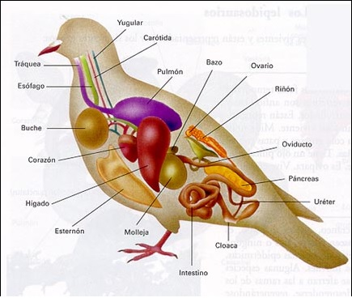
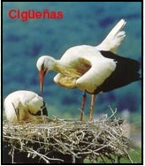
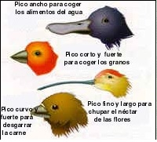
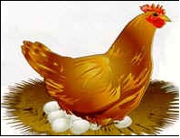
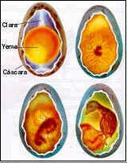

Características Generales
Su cuerpo está cubierto de plumas.
Sus extremidades son alas , que utilizan para volar, anque algunas no puedan hacerlo como el pigüino o el avestruz.
El esqueleto es muy ligero, porque sus huesos son huecos y pesan poco. Además, algunos poseen nas bolsas especiales, llamadas sacos aéreos, que están llenos
de aire y facilitan el vuelo.
La temperatura del cuerpo es estable, es decir, son animales de sangre caliente.
Respiran por pulmones. Poseen en la boca un pico, sin dientes, que varía de unas aves a otras, según a alimentación.
Tienen cloaca, por donde ponen los huevos.

Alimentación
Según su alimentación, las aves pueden ser:
- Insectívoras: Comen insectos. Por ejemplo, la golondrina y el abejorro.
- Hervíboras:Se alimentan principalmente de hierbas, frutos y semillas. Algunas se alimentan casi sólo de
semilla, como la perdiz, que reciben el nombre de granívoras.

- Carnívoras:Se alimentan de carne, por ejemplo el águila y el buitre.
- Omnívoras:Se alimentan de animales y plantas, por ejemplo, la gallina.

Reproducción
Las aves son ovíparas, es decir, se reproducen por huevos. El proceso es el siguiente:
La fecundación es interna. Macho y hembra se aparean y forman los huevos fecundados dentro de la
hembra.
La hembra expulsa los huevos por la cloaca
Los huevos fecundados, para llegar a un buen término, deben permanecer a una temperatura próxima a la

del cuerpo del adulto, por ello hay que proporcionarle continuamente calor, interviniendo en ello tanto el
macho como la hembra, a este proceso se la llama incubación.
Cuando llegue el momento oportuno, las crías rompen el cascarón y salen del cascarón.